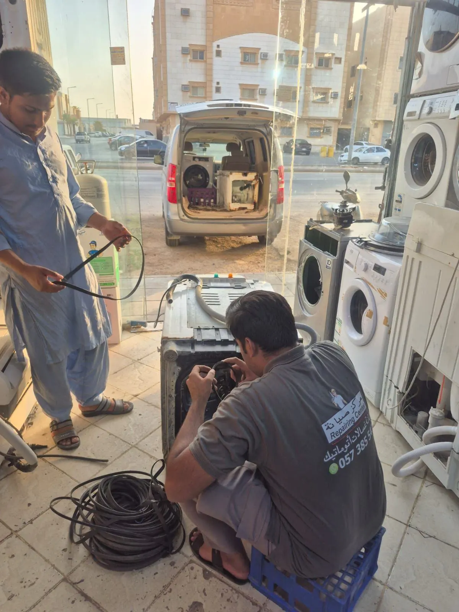

المدونة
نصائح العناية بالغسالات وإصلاحها
نصائح عملية لإطالة عمر الغسالة وغسالة الصحون والنشافة بين الأعطال.
أحدث المقالات


كيف يجدنا العملاء وعمليات البحث ذات الصلة
عمليات بحث ذات صلة:

نصائح عملية لإطالة عمر الغسالة وغسالة الصحون والنشافة بين الأعطال.
عمليات بحث ذات صلة: